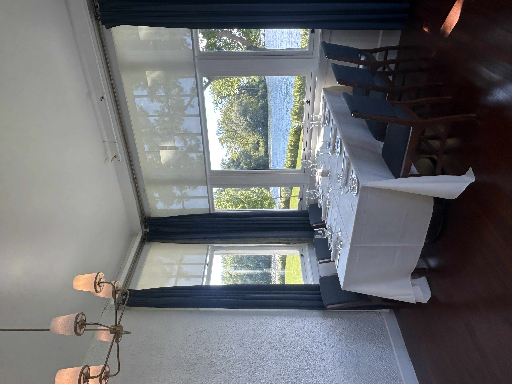

"Nobody hands you confidence. You build it, one shift at a time."
People assume hospitality and entrepreneurship are different worlds — one is service, the other is strategy. I used to think that too, until I noticed I was solving the exact same problem in both: how do you stay composed when the room is full, the orders are stacking up, and everyone is looking at you to hold it together?
Running a floor at 250+ covers and running a client relationship at KAZN both come down to the same skill: reading a situation faster than it can go wrong, and doing something useful about it before anyone notices there was a problem at all.

The floor doesn't wait for you to feel ready
Confidence Is a Byproduct, Not a Prerequisite
Nobody starts a shift feeling ready. I certainly didn't the first time I carried a full tray through a packed dining room. What actually builds confidence isn't a pep talk — it's doing the hard thing badly a few times, adjusting, and doing it slightly less badly the next time. Twenty-four events later, "less badly" has quietly turned into "reliably good."
That's the part entrepreneurship and hospitality share that nobody talks about enough: neither rewards talent as much as it rewards REPETITION UNDER PRESSURE. The founder who's pitched fifty times is not smarter than the one who's pitched five — they've just absorbed fifty rounds of feedback the other person hasn't had yet.
The Floor Teaches You to Read a Room
Every table wants something slightly different, and most of them won't say it directly. A couple celebrating an anniversary wants to be left alone; a table of one wants a bit of conversation. You learn to read intent from posture and tone long before anyone opens their mouth to complain — and that's a skill that transfers directly to client work. Half of managing a KAZN client relationship is noticing the tension in an email before it turns into a lost account.
Self-development, in my experience, isn't a separate project you do on the side with a journal and a podcast. It's what happens automatically when you put yourself somewhere that demands more composure than you currently have, and you have no choice but to grow into it.

Every detail is a decision someone has to own
Ownership Is the Whole Job
The single biggest difference between someone who's good at a service job and someone who's good at running a business is ownership of outcomes they didn't directly cause. A kitchen delay isn't your fault, but it's still your problem the moment it reaches your table. A client's unclear brief isn't your fault either, but it's still your job to turn it into something that works.
That mindset — treating problems as yours to solve regardless of whose fault they were — is the entire difference between an employee and someone building something of their own. I didn't learn it in a business course. I learned it running food during a regatta with forty covers behind and a member waiting for their check.
Growth doesn't announce itself. It just shows up quietly, a shift or a client call at a time, until one day the thing that used to scare you is just Tuesday.
Author
Hemant Yadav